Inflator Module Handling and Scrapping
INFLATOR MODULE HANDLING AND SCRAPPING
LIVE AND UNDEPLOYED INFLATOR MODULE
CAUTION: Refer to SIR Inflator Module Handling and Storage Caution.
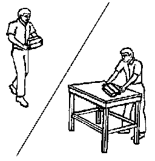
Take special care when handling or storing an undeployed inflator module. An inflator module deployment produces a rapid generation of gas. This may cause the inflator module, or an object in front of the inflator module, to project through the air in the event of an unlikely deployment.
DUAL STAGE INFLATOR MODULE
Dual stage inflator modules have 2 deployment stages. If stage 1 was used to deploy a dual stage inflator module, stage 2 may still be active. Therefore, a deployed dual stage inflator module must be treated as an active module. If disposal of a dual stage module is required, both deployment loops must be energized to deploy the air bag.
SCRAPPING PROCEDURE
During the course of a vehicles useful life, certain situations may arise which will require the disposal of a live and undeployed inflator module. Do NOT dispose a live and undeployed inflator module through normal disposal channels until the inflator module has been deployed.
Do not deploy the inflator module in the following situations:
- After replacement of an inflator module under warranty - the inflator module may need to be returned undeployed to the manufacturer.
- If the vehicle is the subject of a Product Liability report, GM-1241, related to the SIR system and is subject to a preliminary investigation - do NOT alter the SIR system in any manner.
- If the vehicle is involved in a campaign affecting the inflator modules - follow the instructions in the Campaign Service Bulletin for proper SIR handling procedures.
DEPLOYMENT PROCEDURES
You can deploy the inflator module either inside or outside of the vehicle. The method used depends upon the final disposition of the vehicle. Review the following procedures in order to determine which will work best in a given situation:
DEPLOYMENT OUTSIDE VEHICLE - STEERING WHEEL MODULE, I/P MODULE, AND ROOF RAIL MODULE
Deploy the inflator module outside of the vehicle when the vehicle will be returned to service. Situations that require deployment outside of the vehicle include the following:
- Using the SIR diagnostics, you determine that the inflator module is malfunctioning.
- The inflator module is cosmetically damaged, scratched, or ripped.
- The inflator module pigtail is damaged.
- The inflator module connector is damaged.
- The inflator module connector terminals are damaged.
Deployment and disposal of a malfunctioning inflator module is subject to any required retention period.
CAUTION: In order to prevent accidental deployment and the risk of personal injury, do not dispose of an undeployed inflator module as normal shop waste. Undeployed inflator modules contain substances that could cause severe illness or personal injury if their sealed containers are damaged during disposal. Use the following deployment procedures to safely dispose of an undeployed inflator module. Failure to observe the following disposal methods may be a violation of federal, state, or local laws.
TOOLS REQUIRED
- J 39401-B SIR Deployment Fixture
- J 38826 SIR Deployment Harness
- An appropriate pigtail adapter
1. Turn OFF the ignition.
2. Remove the ignition key.
3. Put on safety glasses.
4. Remove the inflator module.
- If you are removing the steering wheel module, refer to Inflatable Restraint Steering Wheel Module Replacement.
- If you are removing the I/P module, refer to Inflatable Restraint Instrument Panel Module Replacement.
- If you are removing a roof rail module, refer to Inflatable Restraint Roof Rail Module Replacement (Front LH, Extended Wheelbase) Inflatable Restraint Roof Rail Module Replacement (Front LH, Standard Wheelbase) Inflatable Restraint Roof Rail Module Replacement (Front RH, Extended Wheelbase) Inflatable Restraint Roof Rail Module Replacement (Front RH, Standard Wheelbase) Inflatable Restraint Roof Rail Module Replacement (Rear LH, Avalanche/Escalade EXT) Inflatable Restraint Roof Rail Module Replacement (Rear LH, Extended Wheelbase) Inflatable Restraint Roof Rail Module Replacement (Rear LH, Standard Wheelbase) Inflatable Restraint Roof Rail Module Replacement (Rear RH, Avalanche/Escalade EXT) Inflatable Restraint Roof Rail Module Replacement (Rear RH, Extended Wheelbase) Inflatable Restraint Roof Rail Module Replacement (Rear RH, Standard Wheelbase).
5. CAUTION: Refer to SIR Inflator Module Handling and Storage Caution.

Place the inflator module on a work bench, with the vinyl trim cover facing up and away from the surface.

6. Clear a space on the ground about 1.85 m (6 ft) in diameter for deployment of the inflator module or deployment fixture. If possible, use a paved, outdoor location free of activity. Otherwise, use a space free of activity on the shop floor. Ensure you have sufficient ventilation.
7. Clear the area of loose or flammable objects.
8. IMPORTANT: Dual stage deployments are only used in steering wheel and I/P inflator modules. If stage 1 was used to deploy a dual stage inflator module, stage 2 may still be active. If disposal of a dual stage module is required, both deployment loops must be energized to deploy the air bag.
If you are deploying a steering wheel inflator module, place the inflator module in the center of the space.

9. When deploying an I/P inflator module, perform the following instructions:
1. Place the J 39401-B in the center of the cleared area.
2. Fill the deployment fixture with water or sand.
3. Using the proper nuts and bolts, mount the I/P module (1) to the deployment fixture (2), with the vinyl trim facing up.
4. Securely tighten all fasteners that hold the I/P module (1) to the deployment fixture (2).

10. When deploying a roof rail module, perform the following instructions:
0. Place the J 39401-B (3) in the center of the cleared area.
1. Fill the deployment fixture with water or sand to provide sufficient stabilization of fixture during deployment.
2. Adjust and secure the fixture arms (4) to the deployment fixture (3), using the proper nuts and bolts.
3. Attach the roof rail module in the deployment fixture and securely tighten all fasteners.

11. Inspect the SIR deployment harness and the appropriate pigtail adapter (2) for damage. Replace as needed.
12. Short the 2 SIR deployment harness leads (1) together using one banana plug seated into the other.
13. Connect the appropriate pigtail adapter (2) to the SIR deployment harness (1).

14. Extend the SIR deployment harness and adapter to the full length from the deployment fixture or area.
15. IMPORTANT: On a dual stage inflator module, both connectors must be attached to the deployment harness adapter. This will ensure that both stage 1 and stage 2 of the deployment loops are energized, regardless of the deployment state.

Connect the inflator module (1) to the adapter (2) on the SIR deployment harness (3).
16. IMPORTANT:
- The rapid expansion of gas involved with deploying an inflator module is very loud. Notify all the people in the immediate area that you intend to deploy the inflator module.
- When the inflator module deploys, the deployment fixture may jump about 30 cm (1 ft) vertically. This is a normal reaction of the inflator module due to the force of the rapid expansion of gas inside the inflator module.
- If you are deploying a dual stage inflator module with stage 1 already deployed, the fixture may not move and the noise may have been reduced.
Clear the area of people.

17. Separate the 2 banana plugs on the SIR deployment harness that were shorted together earlier in the procedure.

18. Place a 12-volt minimum/2-amp minimum power source, such as a vehicle battery, near the shorted end of the harness.
19. Connect the SIR deployment harness wires to the power source. Deployment of the inflator module will occur when contact is made.

20. Disconnect the SIR deployment harness from the power source after the inflator module deploys.
21. If the inflator module did not deploy, disconnect the adapter and discontinue the procedure and contact the Technical Assistance Group.If deployment was successful, proceed to the following steps.
22. CAUTION: After deployment, the metal surfaces of the SIR component may be very hot. To help avoid a fire or personal injury:
- Allow sufficient time for cooling before touching any metal surface of the SIR component.
- Do not place the deployed SIR component near any flammable objects.
Seat one banana plug into the other in order to short the deployment harness leads.

23. Put on a pair of shop gloves.
24. Disconnect the pigtail adapter from the inflator module as soon as possible.
25. Inspect the pigtail adapter and the SIR deployment harness. Replace as needed.
26. Dispose of the deployed inflator module through normal refuse channels.
27. Wash your hands with a mild soap.
DEPLOYMENT INSIDE VEHICLE - VEHICLE SCRAPPING PROCEDURE
Deploy the inflator modules inside of the vehicle when destroying the vehicle or when salvaging the vehicle for parts. This includes, but is not limited to, the following situations:
- The vehicle has completed all useful life.
- Irreparable damage occurred to the vehicle in a non-deployment type accident.
- Irreparable damage occurred to the vehicle during a theft.
- The vehicle is being salvaged for parts to be used on a vehicle with a different VIN, as opposed to rebuilding as the same VIN.
CAUTION: When deploying a SIR component for disposal, perform the deployment procedures in the order listed. Failure to observe the procedures in the order listed may result in personal injury.
1. Lower the driver and passenger windows.
2. Turn the ignition switch to the OFF position and remove the ignition key.
3. Check that all inflator modules which will be deployed are mounted securely.
- Driver inflator module is secured to the steering wheel.
- Passenger inflator module is secured to the instrument panel.
- Left roof rail inflator module is secured to the left roof rail.
- Right roof rail inflator module is secured to the right roof rail.
4. Put on safety glasses.
5. Remove all loose objects from the front seats.
6. CAUTION: A deployed dual stage inflator module will look the same whether one or both stages were used, always assume a deployed dual stage inflator module has an active stage 2. Improper handling or servicing can activate the inflator module and cause personal injury.
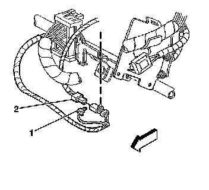
Disconnect the steering wheel module yellow connector (1) from vehicle harness yellow connector (2).
7. IMPORTANT: If the vehicle is equipped with dual stage air bags the steering wheel module and I/P module will each have 4 wires. Refer to SIR Connector End Views for determining high and low circuits.
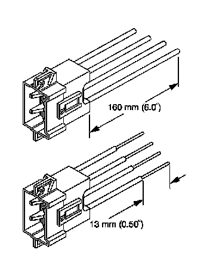
Cut the yellow harness connector out of the vehicle, leaving at least 16 cm (6 in) of wire at the connector.
8. Strip 13 mm (0.5 in) of insulation from each of the connector wire leads.
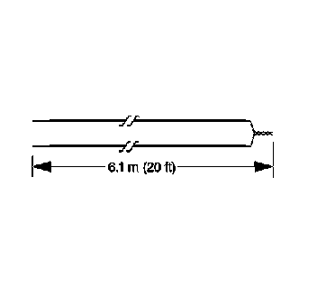
9. Cut two 6.1 m (20 ft) deployment wires from a 0.8 mm (18 gage) or thicker multi-strand wire. Use these wires to fabricate the driver deployment harness.
10. Strip 13 mm (0.5 in) of insulation from both ends of the wires.
11. Twist together one end from each of the wires in order to short the wires. Deployment wires shall remain shorted, and not connected to a power source until you are ready to deploy the inflator module.
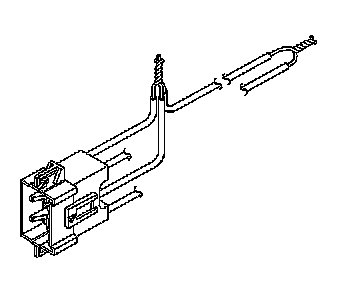
12. Twist together the 2 connector wire leads from the high circuits from both stages of the steering wheel module, to one set of deployment wires. Refer to SIR Connector End Views in order to determine the correct circuits.
13. Inspect that the 3-wire connection is secure.
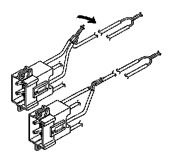
14. Bend flat the twisted connection.
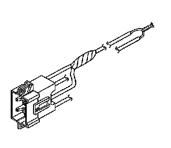
15. Secure and insulate the 3-wire connection to the deployment harness using electrical tape.
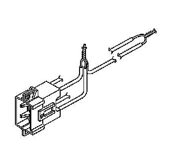
16. Twist together the 2 connector wire leads from the low circuits from both stages of the steering wheel module, to one set of deployment wires. Refer to SIR Connector End Views in order to determine the correct circuits.
17. Inspect that the 3-wire connection is secure.
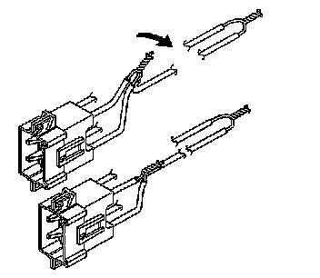
18. Bend flat the twisted connection.
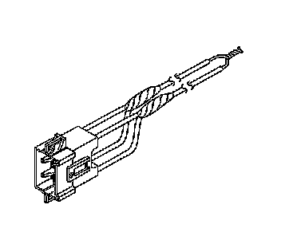
19. Secure and insulate the 3-wire connection to the deployment harness using electrical tape.
20. Connect the deployment harness to the connector on the steering wheel module.
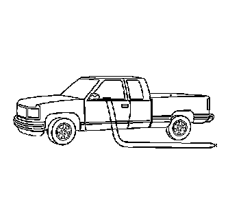
21. Route the deployment harness out of the driver side of the vehicle.
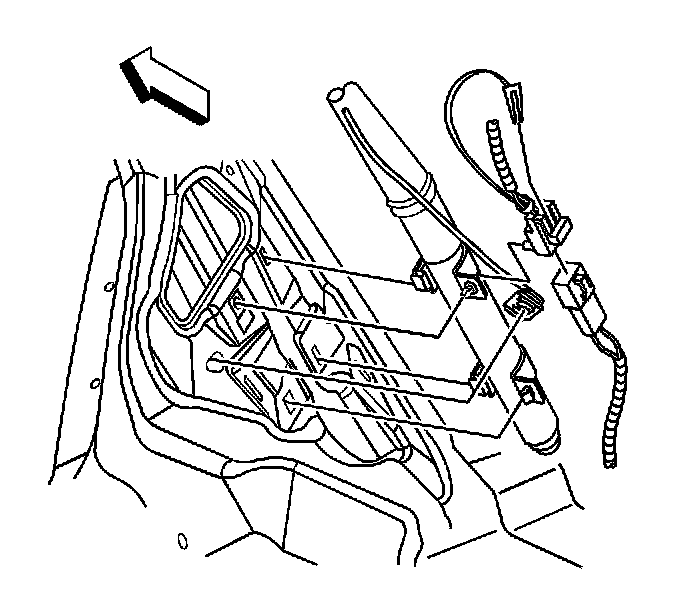
22. Disconnect the yellow left roof rail harness connector from the vehicle harness connector.
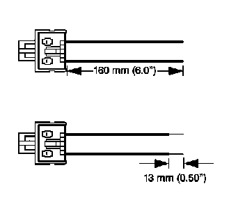
23. Cut the harness connector out of the vehicle, leaving at least 16 cm (6 in) of wire at the connector.
24. Strip 13 mm (0.5 in) of insulation from each of the connector wire leads.
25. Cut two 6.1 m (20 ft) deployment wires from a 0.8 mm (18 gage) or thicker multi-strand wire. These wires will be used to fabricate the roof rail air bag deployment harness.
26. Strip 13 mm (0.5 in) of insulation from both ends of the wires.
27. Twist together one end from each of the wires in order to short the wires.
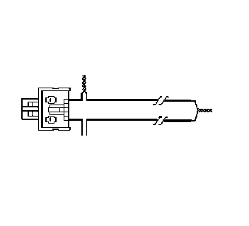
28. Twist together one connector wire lead to one deployment wire.
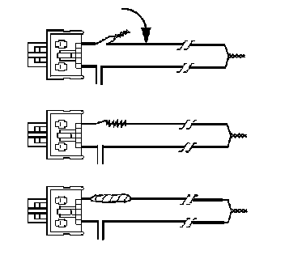
29. Bend flat the twisted connection.
30. Secure and insulate the connection using electrical tape.
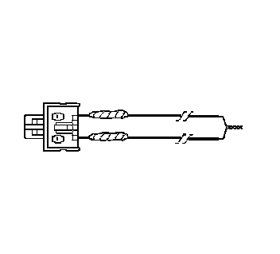
31. Twist together, bend, and tape the remaining connector wire lead to the remaining deployment wire.
32. Connect the deployment harness to the yellow connector of the roof rail module.
33. Route the deployment harness out of the driver side of the vehicle.
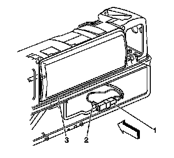
34. Disconnect the I/P module yellow harness connector (1) from the vehicle harness connector (2).
35. IMPORTANT: If the vehicle is equipped with dual stage air bags the steering wheel module and I/P module will each have 4 wires. Refer to SIR Connector End Views for determining high and low circuits.
Cut the yellow harness connector out of the vehicle, leaving at least 16 cm (6 in) of wire at the connector.
36. Strip 13 mm (0.5 in) of insulation from each of the connector wire leads.
37. Cut two 6.1 m (20 ft) deployment wires from a 0.8 mm (18 gage) or thicker multi-strand wire. These wires will be used to fabricate the passenger deployment harness.
38. Strip 13 mm (0.5 in) of insulation from both ends of the wires.
39. Twist together one end from each of the wires in order to short the wires.
40. Twist together the 2 connector wire leads from the high circuits from both stages of the I/P module to one set of deployment wires. Refer to SIR Connector End Views in order to determine the correct circuits.
41. Inspect that the 3-wire connection is secure.
42. Bend flat the twisted connection.
43. Secure and insulate the 3-wire connection to the deployment harness using electrical tape.
44. Twist together the 2 connector wire leads from the low circuits from both stages of the I/P module to one set of deployment wires. Refer to SIR Connector End Views in order to determine the correct circuits.
45. Inspect that the 3-wire connection is secure.
46. Bend flat the twisted connection.
47. Secure and insulate the 3-wire connection to the deployment harness using electrical tape.
48. Connect the deployment harness to the I/P module in-line connector.
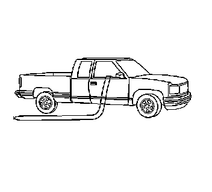
49. Route the deployment harness out of the passenger side of the vehicle.
50. Disconnect the yellow harness connector to the right roof rail air bag from the vehicle harness connector.
51. Cut the harness connector out of the vehicle, leaving at least 16 cm (6 in) of wire at the connector.
52. Strip 13 mm (0.5 in) of insulation from each of the connector wire leads.
53. Cut two 6.1 m (20 ft) deployment wires from a 0.8 mm (18 gage) or thicker multi-strand wire. These wires will be used to fabricate the roof rail module deployment harness.
54. Strip 13 mm (0.5 in) of insulation from both ends of the wires.
55. Twist together one end from each of the wires in order to short the wires.
56. Twist together one connector wire lead to one deployment wire.
57. Bend flat the twisted connection.
58. Secure and insulate the connection using electrical tape.
59. Twist together, bend, and tape the remaining connector wire lead to the remaining deployment wire.
60. Connect the deployment harness to the roof rail module yellow connector.
61. Route the deployment harness out of the passenger side of the vehicle.
62. Completely cover the windshield and the front door window openings with a drop cloth.
63. Stretch to the full length all of the deployment harness wires on the right side of the vehicle.
64. Deploy each deployment loop one at a time.
65. Place a power source, 12 V minimum / 2 A minimum, such as a vehicle battery, near the shorted end of the harnesses.
66. Separate one set of wires and touch the wire ends to the power source in order to deploy the selected inflator module.
67. Disconnect the deployment harness from the power source and twist the wire ends together.
68. Continue the same process with the remaining deployment harnesses.
69. Stretch to the full length all of the deployment harness wires on the left side of the vehicle.
70. Deploy each deployment loop one at a time.
71. Place a power source, 12 V minimum / 2 A minimum, such as a vehicle battery, near the shorted end of the harnesses.
72. Separate one set of wires and touch the wires ends to the power source in order to deploy the selected inflator modules.
73. Disconnect the deployment harness from the power source and twist the wire ends together.
74. Continue the same process with the remaining deployment harnesses.
75. Remove the drop cloth from the vehicle.
76. Disconnect all harnesses from the vehicle.
77. Discard the harnesses.
78. Scrap the vehicle in the same manner as a non-SIR equipped vehicle.
79. If one or all of the inflator modules did not deploy, perform the following steps to remove the undeployed modules from the vehicle:
- Inflatable Restraint Steering Wheel Module Replacement
- Inflatable Restraint Instrument Panel Module Replacement
- Inflatable Restraint Roof Rail Module Replacement (Front LH, Extended Wheelbase) Inflatable Restraint Roof Rail Module Replacement (Front LH, Standard Wheelbase) Inflatable Restraint Roof Rail Module Replacement (Front RH, Extended Wheelbase) Inflatable Restraint Roof Rail Module Replacement (Front RH, Standard Wheelbase) Inflatable Restraint Roof Rail Module Replacement (Rear LH, Avalanche/Escalade EXT) Inflatable Restraint Roof Rail Module Replacement (Rear LH, Extended Wheelbase) Inflatable Restraint Roof Rail Module Replacement (Rear LH, Standard Wheelbase) Inflatable Restraint Roof Rail Module Replacement (Rear RH, Avalanche/Escalade EXT) Inflatable Restraint Roof Rail Module Replacement (Rear RH, Extended Wheelbase) Inflatable Restraint Roof Rail Module Replacement (Rear RH, Standard Wheelbase)